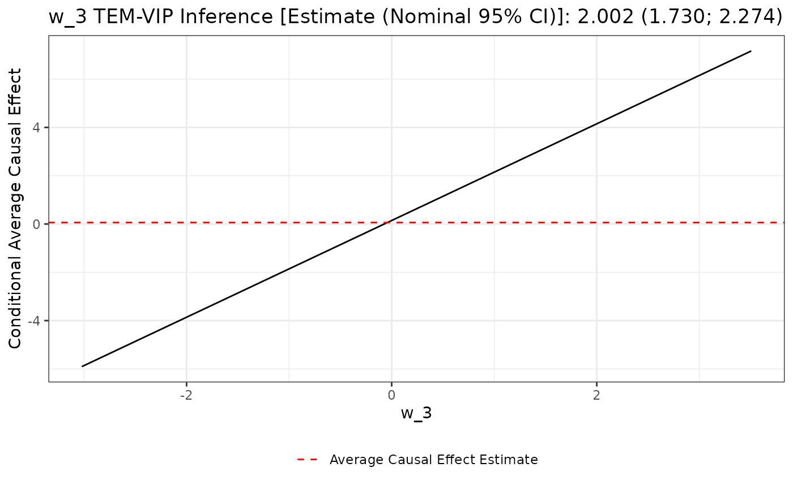
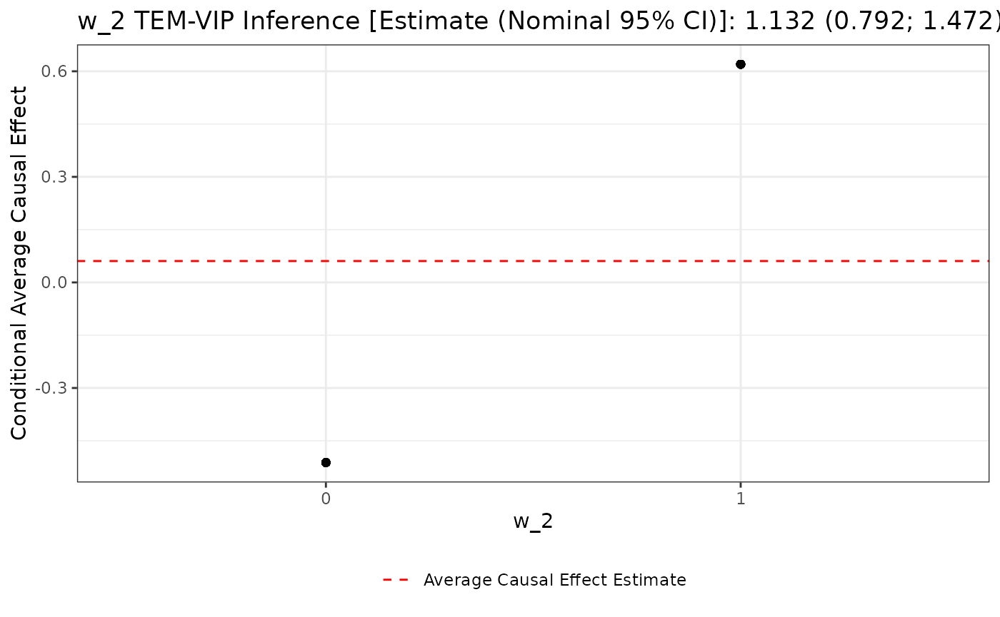

library(dplyr)
library(sl3)
library(Rsolnp)
library(glmnet)
library(xgboost)
library(ranger)
library(earth)
library(unihtee)Background
Treatment effect modifiers (TEMs) are responsible for the disparate effects of a treatment on a population. They modify the effect of treatment on the outcome. In precision medicine, these effect modifiers delineate patient subgroups which experience differing benefit from a given medical intervention. In public health, they are used to determine the effect of policy decisions on sub-populations. Identifying TEMs, if any exist, is required for a comprehensive understanding of an intervention’s effect on a population.
Traditional parametric modelling techniques, like generalized linear models (GLMs), define TEMs as the pre-treatment covariates with non-zero treatment interaction terms. In settings characterized by time-to-event outcomes, the Cox proportional hazards model can similarly be used. Inference about TEMs is therefore possible under stringent conditions about the data-generating process. When these (semi-) parametric methods’ assumptions, like linearity of the covariate-outcome relationship in a linear model or proportional hazards in a Cox model, are violated, however, their inference are invalid.
More flexible approaches instead focus on estimating the conditional average treatment effect (CATE) using interpretable modelling techniques, like the LASSO (Tibshirani 1996; Tian et al. 2014; S. Chen et al. 2017; Q. Zhao, Small, and Ertefaie 2018; Semenova and Chernozhukov 2020; Bahamyirou et al. 2022) or Random Forests (Breiman 2001; Wager and Athey 2018; Cui et al. 2022). Again, however, these methods require restrictive assumptions about the data-generating process, like sparsity of treatment effect modification (P. Zhao and Yu 2006), approximately uncorrelated covariates (P. Zhao and Yu 2006; Hastie, Tibshirani, and Friedman 2009), and sample sizes that are much larger than the number of potential TEMs (P. Zhao and Yu 2006), to reliably recover TEMs.
Instead of identifying TEMs indirectly by parametric modelling, recent work has developed frameworks tailored to the task (Williamson et al. 2022; Boileau et al. 2022, 2025; Hines, Diaz-Ordaz, and Vansteelandt 2022). Relying on TEM variable importance parameters (TEM-VIPs), it is possible to assess pre-treatment covariates’ influence on the treatment effect in nonparametric, algorithm-agnostic fashion that largely avoids the pitfalls of parametric and CATE-based methodologies. These TEM-VIPs are defined within nonparametric statistical models that may be augmented with causal interpretations, permitting formal causal inference about TEMs.
The unihtee R package implements the recent proposals of
Boileau et al. (2022) and Boileau et al. (2025). This TEM-VIP framework
relies on parameters assess the marginal effect of each pre-treatment
covariate on treatment effect heterogeneity, however treatment effect is
defined. Nonparametric estimators are provided in these works, and their
asymptotic properties established. In particular, these estimators are
shown to be asymptotically linear under minimal assumptions about the
data-generating process, and to recover treatment effect modifiers more
readily than competing methods. These TEM-VIPs and estimators are
introduced alongside worked examples in the following section.
unihtee in Action
The unihtee R package performs inference about TEM-VIPs
in data-generating processes with a binary exposure variable and either
continuous, binary, or right-censored time-to-event outcomes. No
restriction is placed on the pre-treatment covariates variables, though
ordinal variables should be formatted as factors using
ordered(), and categorical variables should be one-hot
encoded.
Working with Continuous Outcomes
Let there be independent and identically distributed (i.i.d.) random vectors such that . Dropping the index where possible for notational convenience for the remainder of the tutorial, is defined as the set of pre-treatment covariates, as the binary treatment indicator, and the continuous potential outcomes (Rubin 1974) produced under control and treatment conditions, respectively. Further, is the full-data nonparametric model of all possible data-generating processes, and contains the true but unknown full-data data-generating process . We note that contains both the confounders treatment-outcome confounders and the potential TEMs, possibly overlapping sets of variables.
Now, is generally unknown because its random vectors are unobservable: only one potential outcome is ever measurable in practice. Still, allows to us to readily define causal parameters on which inference may subsequently be performed. Examples are given in the subsections below.
We instead have access to i.i.d. random observations , where and are defined as in the full-data, and where . is the observed-data statistical model containing all possible observed-data data-generating processes, including the true data-generating process . Note too that the elements of are fully specified by their full-data counterparts in .
Having established the requisite statistical objects, let’s define a data-generating process:
cont_outcome_dgp <- function(n_obs) {
# pre-treatment covariates
w_1 <- rnorm(n = n_obs)
w_2 <- rnorm(n = n_obs)
w_3 <- rnorm(n = n_obs)
w_4 <- rnorm(n = n_obs)
w_5 <- rnorm(n = n_obs)
# treatment
prop_score <- plogis(w_1 + w_2)
a <- rbinom(n_obs, 1, prob = prop_score)
# potential outcomes
y_1 <- rnorm(n = n_obs, mean = w_1 + 2 * w_2 + 2 * w_3 + 0.5 * a, sd = 0.1)
y_0 <- rnorm(n = n_obs, mean = w_1 + w_2, sd = 0.1)
# outcome
y <- a * y_1 + (1 - a) * y_0
# assemble the observations in a tibble
tibble(
w_1 = w_1,
w_2 = w_2,
w_3 = w_3,
w_4 = w_4,
w_5 = w_5,
a = a,
y = y
)
}It’s clear from the definition of the potential outcomes that
w_2 and w_3 are treatment effect modifiers:
they interact with the treatment indicator a. Note too that
w_1 and w_2 are confounders. A TEM-VIP for
quantifying the strength of the treatment effect modification of
w_1 through w_5 is outlined next.
Absolute TEM-VIP
Indexing by , and assuming without loss of generality that , we can define our first TEM-VIP for the pre-treatment covariate as follows:
This parameter is called the absolute TEM-VIP. Assuming the expectation of conditional on is linear in , is the simple linear regression coefficient produced by regressing the difference in expected potential outcomes against . Even when this relationship is nonlinear, as is almost surely the case in most applications, corresponds to the correlation between the difference in potential outcomes and the covariate, re-normalized to be on the same scale as the potential outcomes.
Of course, as stated earlier, we don’t generally have access to the full-data random vectors required to perform inference about the above parameter. Luckily, under the identification conditions outlined in Boileau et al. (2022) and Boileau et al. (2025) — namely, that there is no unmeasured confounding and no positivity violations — we can perform inference about the equivalent observed-data parameter:
Boileau et al. (2022) and Boileau et al. (2025) derive two nonparametric estimators of this parameter: the one-step and targeted maximum likelihood (TML) estimators. Both require the estimation of two nuisance parameters: the propensity score and the expected outcome conditioned on the treatment and pre-treatment covariates. These estimators are doubly robust: only one nuisance parameter is required to be consistently estimated to ensure that the one-step and TML estimators are consistent. If both nuisance parameters converge to their true values at a fast enough rate, then the one-step and TML estimators are asymptotically normal. This permits hypothesis testing about using Wald-type confidence intervals. Further details on these estimators and their asymptotic properties are provided in Boileau et al. (2022) and Boileau et al. (2025).
Having defined the parameter and briefly discussed the estimators, we
apply unicate() to recover the treatment effect modifiers,
as defined by the absolute TEM-VIP. Both the one-step and TML estimators
are showcased. The LASSO regression of Tibshirani
(1996) is used to estimate the nuisance parameters.
set.seed(514)
# simulate a random sample
sample_df <- cont_outcome_dgp(n_obs = 500)
# one-step estimator
unihtee(
data = sample_df,
confounders = c("w_1", "w_2", "w_3", "w_4", "w_5"),
modifiers = c("w_1", "w_2", "w_3", "w_4", "w_5"),
exposure = "a",
outcome = "y",
outcome_type = "continuous",
effect = "absolute",
estimator = "onestep",
cond_outcome_estimator = sl3::make_learner(
sl3::Pipeline,
sl3::Lrnr_define_interactions$new(
list(c("w_1", "a"), c("w_2", "a"), c("w_3", "a"), c("w_4", "a"),
c("w_5", "a"))
),
sl3::Lrnr_glmnet$new()
),
prop_score_estimator = sl3::Lrnr_glmnet$new(family = "binomial")
)
#> modifier estimate se z p_value ci_lower ci_upper
#> <fctr> <num> <num> <num> <num> <num> <num>
#> 1: w_3 1.9489367 0.1292105 15.0834273 0.000000e+00 1.69568416 2.2021892
#> 2: w_2 0.8490835 0.1150728 7.3786643 1.598721e-13 0.62354083 1.0746262
#> 3: w_5 0.1451094 0.1094073 1.3263227 1.847328e-01 -0.06932893 0.3595477
#> 4: w_4 -0.1313010 0.1214854 -1.0807961 2.797878e-01 -0.36941247 0.1068105
#> 5: w_1 -0.0518593 0.1223479 -0.4238677 6.716623e-01 -0.29166110 0.1879425
#> p_value_fdr
#> <num>
#> 1: 0.000000e+00
#> 2: 3.996803e-13
#> 3: 3.078881e-01
#> 4: 3.497348e-01
#> 5: 6.716623e-01
# TML estimator
unihtee(
data = sample_df,
confounders = c("w_1", "w_2", "w_3", "w_4", "w_5"),
modifiers = c("w_1", "w_2", "w_3", "w_4", "w_5"),
exposure = "a",
outcome = "y",
outcome_type = "continuous",
effect = "absolute",
estimator = "tmle",
cond_outcome_estimator = sl3::make_learner(
sl3::Pipeline,
sl3::Lrnr_define_interactions$new(
list(c("w_1", "a"), c("w_2", "a"), c("w_3", "a"), c("w_4", "a"),
c("w_5", "a"))
),
sl3::Lrnr_glmnet$new()
),
prop_score_estimator = sl3::Lrnr_glmnet$new(family = "binomial")
)
#> modifier estimate se z p_value ci_lower ci_upper
#> <fctr> <num> <num> <num> <num> <num> <num>
#> 1: w_3 1.91250564 0.1293286 14.7879507 0.000000e+00 1.6590215 2.1659898
#> 2: w_2 0.81718180 0.1150533 7.1026343 1.223910e-12 0.5916773 1.0426864
#> 3: w_5 0.15254387 0.1094359 1.3939106 1.633446e-01 -0.0619505 0.3670383
#> 4: w_4 -0.11791391 0.1215815 -0.9698345 3.321290e-01 -0.3562136 0.1203858
#> 5: w_1 -0.06414269 0.1224767 -0.5237135 6.004778e-01 -0.3041970 0.1759116
#> p_value_fdr
#> <num>
#> 1: 0.000000e+00
#> 2: 3.059775e-12
#> 3: 2.722410e-01
#> 4: 4.151613e-01
#> 5: 6.004778e-01unicate() outputs a table of results summarizing the
TEM-VIP inference procedure for each potential treatment effect
modifier. This table ordered by the nominal p-value of the inference
procedure. Both the one-step and TML estimators correctly identify the
TEM-VIP of w_2 and w_3 as being non-zero based
on the false discovery rate adjusted p-values. Each estimator’s point
estimates are also close to their true parameter values; for every unit
increase in w_2, the one-step and TML estimators suggest
that the average treatment effect increases by
and
units, respectively. Similarly for w_3, the one-step and
TML estimators indicate that a unit increase in this covariate leads to
an increase of
and
in the average treatment effect,
respectively.
Working with Binary Outcomes
In the binary outcome setting, the full-data and observed-data models and data-generating processes are identical to those of the continuous outcome setting, save that the outcome is binary. That means the absolute TEM-VIP can be used as is with binary-outcome data — the only practical difference is the choice of estimator used for the expected outcome conditional on the treatment and covariates. With that said, a relative TEM-VIP is generally more sensitive and informative in these scenarios. We propose such a parameter in the following section.
Before that, however, we define a data-generating process with two treatment effect modifiers:
bin_outcome_dgp <- function(n_obs) {
# pre-treatment covariates
w_1 <- rpois(n = n_obs, lambda = 3)
w_2 <- rnorm(n = n_obs)
w_3 <- rbinom(n = n_obs, size = 1, prob = 0.5)
# treatment
prop_score <- plogis(-0.5 + 0.25 * w_1 + w_2 + 0.5 * w_3)
a <- rbinom(n_obs, 1, prob = prop_score)
# potential outcomes
y_prob_1 <- plogis(-1 - 3 * w_3)
y_prob_0 <- plogis(1 + 2 * w_2)
y_1 <- rbinom(n_obs, 1, prob = y_prob_1)
y_0 <- rbinom(n_obs, 1, prob = y_prob_0)
# outcome
y <- a * y_1 + (1 - a) * y_0
# assemble the observations in a tibble
tibble(
w_1 = w_1,
w_2 = w_2,
w_3 = w_3,
a = a,
y = y
)
}Here, w_2 and w_3 are a treatment effect
modifier. They interact with the treatment variable, a.
Relative TEM-VIP
The relative TEM-VIP for the pre-treatment covariate is
Assuming that the expectation of the log ratio of the expected conditional potential outcomes conditional on is linear in , is the simple linear regression coefficient obtained by regressing the log ratio of the expected conditional potential outcomes on $W_j - \mathbbf{E}_{P_{X,0}}[W_j]$. As with , this parameter can be interpreted as standardized correlation coefficient of the log ratio of expected potential outcomes and the pre-treatment covariate.
We highlight that this TEM-VIP isn’t restricted to data-generating processes with binary outcomes; it may also be used when the outcome is non-negative, continuous or discrete random variable.
Again, much like , isn’t generally ever observed since it is a parameter of the full-data model. Under the conditions of no unmeasured confounding and in the absence of positivity violations, however, an equivalent parameter can be estimated from the observed-data:
Nonparametric one-step and TML estimators of this parameter are
derived by Boileau et al. (2025) and
implemented in the unicate package. Just like
,
inference about this parameter depends on the estimation of the
propensity score and the expected outcome conditional on treatment
indicator and covariates. These estimators are consistent if both
nuisance parameters are consistently estimated, and are asymptotically
normal if both converge to their true values at rate of
.
The latter permits hypothesis testing based on the Wald-type confidence
intervals. Additional details are provided by Boileau et al. (2025).
We now apply these estimators to a random sample generated by
bin_outcome_dgp(). The nuisance parameters are estimated
using Random Forests implemented in ranger package (Breiman 2001; Wright and Ziegler 2017). Note
too that these estimators are fit using cross-fitting (Zheng and van der Laan 2011; Chernozhukov et al.
2017).
# simulate a random sample
sample_df <- bin_outcome_dgp(n_obs = 1000)
# one-step estimator
unihtee(
data = sample_df,
confounders = c("w_1", "w_2", "w_3"),
modifiers = c("w_1", "w_2", "w_3"),
exposure = "a",
outcome = "y",
outcome_type = "binary",
effect = "relative",
estimator = "onestep",
cond_outcome_estimator = sl3::Lrnr_ranger$new(),
prop_score_estimator = sl3::Lrnr_ranger$new(),
cross_fit = TRUE
)
#> modifier estimate se z p_value ci_lower
#> <fctr> <num> <num> <num> <num> <num>
#> 1: w_3 -3.48443818 0.6479029 -5.37802562 7.530710e-08 -4.754328
#> 2: w_2 -0.87932567 0.4091068 -2.14937904 3.160437e-02 -1.681175
#> 3: w_1 -0.04379762 1.0908615 -0.04014957 9.679739e-01 -2.181886
#> ci_upper p_value_fdr
#> <num> <num>
#> 1: -2.21454857 2.259213e-07
#> 2: -0.07747626 4.740655e-02
#> 3: 2.09429088 9.679739e-01
# TML estimator
unihtee(
data = sample_df,
confounders = c("w_1", "w_2", "w_3"),
modifiers = c("w_1", "w_2", "w_3"),
exposure = "a",
outcome = "y",
outcome_type = "binary",
effect = "relative",
estimator = "tmle",
cond_outcome_estimator = sl3::Lrnr_ranger$new(),
prop_score_estimator = sl3::Lrnr_ranger$new(),
cross_fit = TRUE
)
#> modifier estimate se z p_value ci_lower
#> <fctr> <num> <num> <num> <num> <num>
#> 1: w_3 -3.78448151 0.5030545 -7.52300556 5.353114e-14 -4.770468
#> 2: w_2 -0.89070174 0.4264948 -2.08842354 3.675965e-02 -1.726632
#> 3: w_1 0.05910131 1.0768935 0.05488129 9.562330e-01 -2.051610
#> ci_upper p_value_fdr
#> <num> <num>
#> 1: -2.79849477 1.605934e-13
#> 2: -0.05477197 5.513947e-02
#> 3: 2.16981260 9.562330e-01Both estimators correctly identify w_2 and
w_3 as treatment effect modifiers, as defined by the
relative TEM-VIP. The one-step estimator’s results suggest that for
every unit increase in w_2 and w_3, the log
ratio of the conditional expected potential outcomes is expected to
decrease by
and
units, respectively. For the TML estimator, the log ration of the
conditional expected outcomes is expected to decrease by
and
for every unit increase in w_2 and w_3,
respectively.
Working with Time-to-Event Outcomes
unihtee also provides functionality for estimating
TEM-VIPs for data with right-censored time-to-event outcomes. We detail
the assumed full-data and observed-data models here, then introduce an
absolute and a relative TEM-VIP in subsequent sections.
Consider i.i.d. random vectors . and are defined as in the continuous and binary outcome models. and correspond to the censoring times that would be observed under the control and treatment conditions, respectively. Similarly, and are the event times that would be observed under either treatment assignment.
Again, is generally unobservable. We instead have access to random observations , where is a censoring indicator and . and are defined as in the previous observed-data models.
Now, it’s worth introducing the full-data and observed-data conditional survival functions since both TEM-VIPs introduced in this section rely on them. The full-data survival function is defined as . This parameter’s observed-data counterpart is defined analogously as .
Finally, we define a time-to-event data-generating process with nine
equidistant time points and three potential confounders,
w_1, w_2, and w_3. Of these
covariates, only w_1 is a treatment effect modifier. Note
that unihtee() requires a “wide” data format when working
time-to-event outcome data. That is, each observation is represented by
a single row in the data. An example is provided following this code
chunk.
# define hazard functions
cond_cens_hazard <- function(time, a, w_1, w_2, w_3) {
(time < 9) / (1 + exp(4 + 0.2 * (w_1 + w_2) - a))
}
cond_surv_hazard <- function(time, a, w_1, w_2, w_3) {
(time < 9) / (1 + exp(2 + 3 * a * w_1)) + (time == 9)
}
# failure time simulator
failure_time_sim <- function(n_obs, a, w_1, w_2, w_3) {
sapply(
seq_len(n_obs),
function(obs) {
failure_time <- NA
for (t in 1:9) {
prob <- cond_surv_hazard(t, a, w_1[obs], w_2[obs], w_3[obs])
status <- rbinom(1, 1, prob)
if (status == 1) {
failure_time <- t
break
}
}
return(failure_time)
}
)
}
# censoring time simulator
censor_time_sim <- function(n_obs, a, w_1, w_2, w_3) {
sapply(
seq_len(n_obs),
function(obs) {
censor_time <- NA
for (t in 1:9) {
prob <- cond_cens_hazard(t, a, w_1[obs], w_2[obs], w_3[obs])
status <- rbinom(1, 1, prob)
if (status == 1) {
censor_time <- t
break
}
}
if (is.na(censor_time)) censor_time <- 10
return(censor_time)
}
)
}
# time-to-event outcome data-generating process
tte_outcome_dgp <- function(n_obs) {
# pre-treatment covariates
w_1 <- rnorm(n = n_obs)
w_2 <- rnorm(n = n_obs)
w_3 <- rnorm(n = n_obs)
# treatment
prop_score <- plogis(-1 - w_1 + w_2 - w_3)
a <- rbinom(n_obs, 1, prob = prop_score)
# generate the failure events for t = 1 to 9
failure_time_1 <- failure_time_sim(n_obs, 1, w_1, w_2, w_3)
failure_time_0 <- failure_time_sim(n_obs, 0, w_1, w_2, w_3)
# generate the censoring events for t = 1 to 9
censor_time_1 <- censor_time_sim(n_obs, 1, w_1, w_2, w_3)
censor_time_0 <- censor_time_sim(n_obs, 0, w_1, w_2, w_3)
# compile the failure and censoring times
failure_time <- sapply(
seq_len(n_obs),
function(obs) {
if (a[obs] == 1) failure_time_1[obs] else failure_time_0[obs]
}
)
censor_time <- sapply(
seq_len(n_obs),
function(obs) {
if (a[obs] == 1) censor_time_1[obs] else censor_time_0[obs]
}
)
# determine the observed time-to-event and censoring indicator
time <- sapply(
seq_len(n_obs),
function(obs) {
if (censor_time[obs] < failure_time[obs]) {
censor_time[obs]
} else {
failure_time[obs]
}
}
)
censoring_indicator <- sapply(
seq_len(n_obs),
function(obs) if (time[obs] == censor_time[obs]) 1 else 0
)
# assemble the tibble
tibble(
w_1 = w_1,
w_2 = w_2,
w_3 = w_3,
a = a,
time = time,
censoring_indicator = censoring_indicator
)
}
tte_outcome_dgp(10)
#> # A tibble: 10 × 6
#> w_1 w_2 w_3 a time censoring_indicator
#> <dbl> <dbl> <dbl> <int> <int> <dbl>
#> 1 -0.592 0.786 0.379 1 1 0
#> 2 -1.31 0.555 0.357 1 2 0
#> 3 -0.854 -1.01 0.840 1 2 0
#> 4 -0.147 -0.317 -0.293 1 3 0
#> 5 0.987 -0.411 0.701 0 5 0
#> 6 0.0565 0.160 -0.446 0 3 0
#> 7 0.614 -0.235 -1.00 1 6 0
#> 8 -1.07 1.68 1.07 1 1 0
#> 9 0.324 2.62 0.457 0 4 0
#> 10 -0.593 -0.905 1.13 0 5 1Absolute TEM-VIP
Boileau et al. (2025) Propose an absolute TEM-VIP based on the difference of restricted mean survival times at some pre-specified time . This TEM-VIP is defined as
“” is re-used to highlight that this is an absolute TEM-VIP. As in the continuous outcome scenario, this parameter captures the correlation between the conditional difference in the restricted mean survival time and the covariate, re-normalized to be on the same scale as the outcome. Put another way, this parameter identifies TEMs driving the largest difference in truncated survival times across treatment conditions.
As before, this full-data parameter is equal to the following observed-data parameter under the assumptions of (1) no unmeasured confounding, (2) censoring mechanism positivity, and (3) treatment assignment positivity:
As in the continuous and binary outcome scenarios, Boileau et al. (2025) derived two estimators of this absolute effect parameter: a one-step estimator and a TML estimator. Both rely on the accurate estimation of three nuisance parameters: the conditional event hazard function, the conditional censoring hazard function, and the propensity score. If either the conditional event hazard function or the conditional censoring hazard function and the propensity score are consistently estimated, then these nonparametric estimators are consistent. Further, if all of these nuisance parameters are converge to their true values at a rate of , then these estimators are asymptotically normally distributed. This permits hypothesis testing through the use of Wald-type confidence intervals. See Boileau et al. (2025) for more details.
We now apply these estimators to a random sample from the data-generating process defined above, choosing as target parameter . LASSO regressions are used to estimate the propensity scores and censoring hazard functions, and, as demonstration of these methods’ flexibility, estimate the failure hazard function with XGBoost (T. Chen and Guestrin 2016).
# simulate a random sample
sample_df <- tte_outcome_dgp(n_obs = 250)
# one-step estimator
unihtee(
data = sample_df,
confounders = c("w_1", "w_2", "w_3"),
modifiers = c("w_1", "w_2", "w_3"),
exposure = "a",
outcome = "time",
censoring = "censoring_indicator",
time_cutoff = 8,
outcome_type = "time-to-event",
effect = "absolute",
estimator = "onestep",
prop_score_estimator = sl3::Lrnr_glmnet$new(),
failure_hazard_estimator = sl3::Lrnr_xgboost$new(),
censoring_hazard_estimator = sl3::Lrnr_glmnet$new()
)
#> modifier estimate se z p_value ci_lower ci_upper
#> <fctr> <num> <num> <num> <num> <num> <num>
#> 1: w_1 2.39673344 0.2823834 8.4875152 0.0000000 1.8432620 2.9502049
#> 2: w_2 -0.14157860 0.3217762 -0.4399909 0.6599437 -0.7722599 0.4891027
#> 3: w_3 0.08090048 0.3299970 0.2451552 0.8063363 -0.5658936 0.7276946
#> p_value_fdr
#> <num>
#> 1: 0.0000000
#> 2: 0.8063363
#> 3: 0.8063363
# TML estimator
unihtee(
data = sample_df,
confounders = c("w_1", "w_2", "w_3"),
modifiers = c("w_1", "w_2", "w_3"),
exposure = "a",
outcome = "time",
censoring = "censoring_indicator",
time_cutoff = 8,
outcome_type = "time-to-event",
effect = "absolute",
estimator = "tmle",
prop_score_estimator = sl3::Lrnr_glmnet$new(),
failure_hazard_estimator = sl3::Lrnr_xgboost$new(),
censoring_hazard_estimator = sl3::Lrnr_glmnet$new()
)
#> modifier estimate se z p_value ci_lower ci_upper
#> <fctr> <num> <num> <num> <num> <num> <num>
#> 1: w_1 1.94534464 0.2826673 6.88209971 5.897727e-12 1.3913167 2.4993726
#> 2: w_2 0.09930273 0.3200769 0.31024646 7.563735e-01 -0.5280480 0.7266535
#> 3: w_3 -0.03189188 0.3300905 -0.09661556 9.230317e-01 -0.6788692 0.6150855
#> p_value_fdr
#> <num>
#> 1: 1.769318e-11
#> 2: 9.230317e-01
#> 3: 9.230317e-01These results suggest every unit increase in w_1 results
in an increase of
— according to the one-step estimator — or
— according to the TML estimator — time units for the difference in mean
survival times, truncated at time eight.
Relative TEM-VIP
We next consider a relative TEM-VIP for data with right-censored time-to-event outcomes. We define this parameter as follows for the pre-treatment covariate:
For some pre-specified time point , this TEM-VIP represents the standardized correlation coefficient of and the log ratio of conditional survival times under each treatment condition. As with “”, we re-use “” to highlight that this is a relative effect parameter. Its observed-data counterpart is given by again assuming that there is no unmeasured confounding and that there are no positivity violations of the censoring or treatment assignment mechanisms.
Boileau et al. (2025) derived one-step and TML estimators of this parameter, again requiring the estimation of three nuisance parameters: the propensity score and the conditional failure and censoring event hazards. These one-step and TML estimators are consistent when all nuisance parameters are estimated consistently, and are asymptotically linear when these nuisance parameters converge to their true values at a fast-enough rate (Boileau et al. 2025).
We apply the nonparametric estimators of Boileau et al. (2025) to a random sample
generated by tte_outcome_dgp(), taking as target of
inference
.
The nuisance parameters are estimated using the same strategy employed
in prior absolute TEM-VIP example.
# simulate a random sample
sample_df <- tte_outcome_dgp(n_obs = 2000)
# one-step estimator
unihtee(
data = sample_df,
confounders = c("w_1", "w_2", "w_3"),
modifiers = c("w_1", "w_2", "w_3"),
exposure = "a",
outcome = "time",
censoring = "censoring_indicator",
time_cutoff = 5,
outcome_type = "time-to-event",
effect = "relative",
estimator = "onestep",
prop_score_estimator = sl3::Lrnr_glmnet$new(),
failure_hazard_estimator = sl3::Lrnr_xgboost$new(),
censoring_hazard_estimator = sl3::Lrnr_glmnet$new(),
cross_fit = TRUE
)
#> modifier estimate se z p_value ci_lower ci_upper
#> <fctr> <num> <num> <num> <num> <num> <num>
#> 1: w_1 3.1304788 0.3629837 8.6242960 0.0000000 2.419031 3.841927
#> 2: w_3 0.8748264 0.9267492 0.9439732 0.3451833 -0.941602 2.691255
#> 3: w_2 1.6169328 1.7992532 0.8986688 0.3688291 -1.909604 5.143469
#> p_value_fdr
#> <num>
#> 1: 0.0000000
#> 2: 0.3688291
#> 3: 0.3688291
# TML estimator
unihtee(
data = sample_df,
confounders = c("w_1", "w_2", "w_3"),
modifiers = c("w_1", "w_2", "w_3"),
exposure = "a",
outcome = "time",
censoring = "censoring_indicator",
time_cutoff = 5,
outcome_type = "time-to-event",
effect = "relative",
estimator = "tmle",
prop_score_estimator = sl3::Lrnr_glmnet$new(),
failure_hazard_estimator = sl3::Lrnr_xgboost$new(),
censoring_hazard_estimator = sl3::Lrnr_glmnet$new(),
cross_fit = TRUE
)
#> modifier estimate se z p_value ci_lower ci_upper
#> <fctr> <num> <num> <num> <num> <num> <num>
#> 1: w_1 3.10042980 0.7241641 4.28139139 1.857284e-05 1.681068 4.519791
#> 2: w_3 -0.02600101 0.6190648 -0.04200046 9.664983e-01 -1.239368 1.187366
#> 3: w_2 0.01953589 1.7145968 0.01139387 9.909092e-01 -3.341074 3.380146
#> p_value_fdr
#> <num>
#> 1: 5.571851e-05
#> 2: 9.909092e-01
#> 3: 9.909092e-01Again, both the one-step and TML estimators successfully discern the
TEM from the other potential TEMs when using a false discovery rate
cutoff of
.
These results indicate that a unit increase in w_1 results
in an increase of the log ratio of conditional survivals equal to either
or
,
depending on whether one uses the one-step estimator or the TML
estimator.
Additional Features and Notes
Working with Randomized Experiment Data
While unihtee’s estimators are applied to (simulated)
observational data in the previous section’s examples, they are also
suitable for data generated by randomized experiments. The propensity
scores used to randomize observations should be saved data object passed
to unihtee(), and the name of the variable containing these
scores should be indicated in the propensity_score_values
argument.
Providing the known propensity scores to the absolute TEM-VIP estimators produces some desirable results. In the continuous and binary outcome settings, providing known treatment assignment probabilities guarantees that the estimators are asymptotically linear, even when the expected conditional outcome estimator is misspecified. When the outcome is a right-censored time-to-event variable, asymptotic normality of the estimators is guaranteed so long as the conditional censoring hazard is estimated consistently at a rate of . Additional details and discussions are provided in Boileau et al. (2022) and Boileau et al. (2025).
Cross-Fitting
Cross-fitting, popularized by Zheng and van
der Laan (2011) and Chernozhukov et al.
(2017), uses cross-validation to fit the nuisance parameters and
estimate the target parameter. Doing so relaxes an assumption required
for asymptotic normality of the one-step and TML estimators implemented
in the unihtee package (Boileau et
al. 2025). This technique is also known to improve these
estimators finite-sample properties, such as reducing their false
discovery rate (see, for example, Hejazi et
al.).
Users may employ the cross-fitted version of any estimator
implemented in unihtee by setting unihtee()’s
cross_fit argument to TRUE. Only K-fold
cross-validation is currently supported. The number of folds defaults to
five, though this can be modified using the cross_fit_folds
argument. Examples are provided in the binary outcome and time-to-event
outcome relative TEM-VIP sections above, as well as in the subsection on
Super Learners that follows.
sl3 Integration: Using Super Learners
unihtee uses the estimators implemented in the
sl3 (Coyle et al. 2021) to
estimate nuisance parameters. While individual estimators may be used,
as is done in the examples above, sl3’s main contribution
are facilities for constructing Super Learners (Laan, Polley, and Hubbard 2007). Super Learners
are ensemble algorithms, meaning they are the convex combination of
individual supervised learning algorithms. These individual algorithms
are combined on the basis of a user-defined risk, and this combination
is asymptotically optimal with respect to said risk under minimal
conditions about the data-generating process. A complete review on Super
Learners and sl3 is outside the scope of this vignette. We
invite the interested reader to the tutorials available on the
sl3 package’s website and in Chapter 6 of the tlverse
handbook (Phillips 2023).
Employing Super Learners to estimate nuisance parameters decreases the risk of model-misspecification — assuming, of course, that a diverse collection individual learning algorithms is considered. In turn, there is an increased likelihood that the resulting one-step and TML estimators are asymptotically normal.
We revisit our continuous outcome example, this time using Super Learners to estimate the propensity score and the conditional expected outcomes. Both Super Learners are composed of penalized GLMs, multivariate adaptive regression splines (Friedman 1991), and Random Forests. The propensity score’s Super Learner uses the negative log likelihood loss to form the convex combination of individual learning algorithms, while the conditional expected outcomes’ uses the squared error loss.
# simulate a random sample
sample_df <- cont_outcome_dgp(n_obs = 500)
# define the Super Learner for the propensity score
sl_bin <- Lrnr_sl$new(
learners = list(
Lrnr_glmnet$new(family = "binomial", alpha = 0),
Lrnr_glmnet$new(family = "binomial", alpha = 0),
Lrnr_glmnet$new(family = "binomial", alpha = 0.5),
Lrnr_earth$new(glm = list(family = "binomial")),
Lrnr_ranger$new()
),
metalearner = make_learner(
Lrnr_solnp, metalearner_logistic_binomial, loss_loglik_binomial
)
)
# define the Super Learner for the conditional expected outcomes
sl_cont <- Lrnr_sl$new(
learners = list(
sl3::make_learner(
sl3::Pipeline,
sl3::Lrnr_define_interactions$new(
list(c("w_1", "a"), c("w_2", "a"), c("w_3", "a"), c("w_4", "a"),
c("w_5", "a"))
),
sl3::Lrnr_glmnet$new(alpha = 1)
),
sl3::make_learner(
sl3::Pipeline,
sl3::Lrnr_define_interactions$new(
list(c("w_1", "a"), c("w_2", "a"), c("w_3", "a"), c("w_4", "a"),
c("w_5", "a"))
),
sl3::Lrnr_glmnet$new(alpha = 0.5)
),
sl3::make_learner(
sl3::Pipeline,
sl3::Lrnr_define_interactions$new(
list(c("w_1", "a"), c("w_2", "a"), c("w_3", "a"), c("w_4", "a"),
c("w_5", "a"))
),
sl3::Lrnr_glmnet$new(alpha = 0)
),
Lrnr_earth$new(degree = 1),
Lrnr_earth$new(glm = list(family = "gaussian"), degree = 2),
Lrnr_ranger$new()
),
metalearner = make_learner(
Lrnr_solnp, metalearner_linear, loss_squared_error
)
)
# one-step estimator
unihtee(
data = sample_df,
confounders = c("w_1", "w_2", "w_3", "w_4", "w_5"),
modifiers = c("w_1", "w_2", "w_3", "w_4", "w_5"),
exposure = "a",
outcome = "y",
outcome_type = "continuous",
effect = "absolute",
estimator = "onestep",
cond_outcome_estimator = sl_cont,
prop_score_estimator = sl_bin
)
#> modifier estimate se z p_value ci_lower ci_upper
#> <fctr> <num> <num> <num> <num> <num> <num>
#> 1: w_2 1.075841687 0.1118589 9.61784353 0.0000000 0.85659818 1.2950852
#> 2: w_3 2.024303055 0.1330007 15.22024499 0.0000000 1.76362171 2.2849844
#> 3: w_1 0.161787857 0.1188020 1.36182826 0.1732521 -0.07106397 0.3946397
#> 4: w_5 0.007153675 0.1212798 0.05898488 0.9529641 -0.23055475 0.2448621
#> 5: w_4 -0.002416209 0.1198597 -0.02015864 0.9839168 -0.23734126 0.2325088
#> p_value_fdr
#> <num>
#> 1: 0.0000000
#> 2: 0.0000000
#> 3: 0.2887535
#> 4: 0.9839168
#> 5: 0.9839168
# TML estimator
unihtee(
data = sample_df,
confounders = c("w_1", "w_2", "w_3", "w_4", "w_5"),
modifiers = c("w_1", "w_2", "w_3", "w_4", "w_5"),
exposure = "a",
outcome = "y",
outcome_type = "continuous",
effect = "absolute",
estimator = "tmle",
cond_outcome_estimator = sl_cont,
prop_score_estimator = sl_bin
)
#> modifier estimate se z p_value ci_lower ci_upper
#> <fctr> <num> <num> <num> <num> <num> <num>
#> 1: w_2 1.052130930 0.1119089 9.40166999 0.0000000 0.83278941 1.2714725
#> 2: w_3 1.999026617 0.1330143 15.02865830 0.0000000 1.73831857 2.2597347
#> 3: w_1 0.156419220 0.1188069 1.31658412 0.1879781 -0.07644222 0.3892807
#> 4: w_4 0.006275685 0.1199683 0.05231119 0.9582807 -0.22886223 0.2414136
#> 5: w_5 -0.002993851 0.1213515 -0.02467091 0.9803175 -0.24084270 0.2348550
#> p_value_fdr
#> <num>
#> 1: 0.0000000
#> 2: 0.0000000
#> 3: 0.3132968
#> 4: 0.9803175
#> 5: 0.9803175Though this procedure is more robust, the resulting estimates and hypothesis tests are similar to those of the previous continuous outcome, absolute TEM-VIP example.
Visualizing TEM-VIP Estimates
The unihtee package provides functionality for
visualizing pre-treatment covariates’ TEM-VIP estimates. The resulting
plots can help with the interpretation of the TEM-VIP parameter.
Consider the following data-generating process:
cont_outcome_dgp_2 <- function(n_obs) {
# pre-treatment covariates
w_1 <- rnorm(n = n_obs)
w_2 <- ifelse(rnorm(n = n_obs) < 0, 0, 1)
w_3 <- rnorm(n = n_obs)
w_4 <- rnorm(n = n_obs)
w_5 <- ifelse(rnorm(n = n_obs) < 1, 0, 1)
# treatment
prop_score <- plogis(w_1 + w_2)
a <- rbinom(n_obs, 1, prob = prop_score)
# potential outcomes
y_1 <- rnorm(n = n_obs, mean = w_1 + 2 * w_2 + 2 * w_3 + 0.5 * a, sd = 0.1)
y_0 <- rnorm(n = n_obs, mean = w_1 + w_2, sd = 0.1)
# outcome
y <- a * y_1 + (1 - a) * y_0
# assemble the observations in a tibble
tibble(
w_1 = w_1,
w_2 = w_2,
w_3 = w_3,
w_4 = w_4,
w_5 = w_5,
a = a,
y = y
)
}This data-generating process is similar to the previously introduced
data-generating process for continuous outcomes, though it contains two
binary pre-treatment covariates w_2 and w_5 in
addition to the continuous pre-treatment covariates w_1,
w_3, and w_4.
We can visualize the TEM-VIP estimate of, for example,
w_3 as follows:
# simulate a random sample from above data-generating process
sample_df <- cont_outcome_dgp_2(n_obs = 500)
# TML estimator
unihtee_output <- unihtee(
data = sample_df,
confounders = c("w_1", "w_2", "w_3", "w_4", "w_5"),
modifiers = c("w_1", "w_2", "w_3", "w_4", "w_5"),
exposure = "a",
outcome = "y",
outcome_type = "continuous",
effect = "absolute",
estimator = "tmle",
cond_outcome_estimator = sl_cont,
prop_score_estimator = sl_bin
)
# visualize w_3's TEM-VIP estimate
plot(unihtee_output, modifier_name = "w_3", print_interpretation = FALSE)
The resulting plot is constructed by plotting the simple linear
regression of the conditional average causal effect — in this scenario,
the conditional average treatment effect — regressed on
w_3. As previously stated, the TEM-VIP for w_3
corresponds to the slope of this black line. The average treatment
effect estimate is given by the dotted red line.
The visualization for binary pre-treatment covariates is different.
Consider the plot of w_2’s TEM-VIP estimate:
# visualize w_2's TEM-VIP estimate
plot(unihtee_output, modifier_name = "w_2", print_interpretation = FALSE)
Here, the w_2’s TEM-VIP estimate corresponds to the
vertical distance between the two black points in the above plot. Again,
the average treatment effect estimate is given by the dotted red
line.
Session information
sessionInfo()
#> R version 4.5.0 (2025-04-11)
#> Platform: x86_64-pc-linux-gnu
#> Running under: Ubuntu 24.04.2 LTS
#>
#> Matrix products: default
#> BLAS: /usr/lib/x86_64-linux-gnu/openblas-pthread/libblas.so.3
#> LAPACK: /usr/lib/x86_64-linux-gnu/openblas-pthread/libopenblasp-r0.3.26.so; LAPACK version 3.12.0
#>
#> locale:
#> [1] LC_CTYPE=en_US.UTF-8 LC_NUMERIC=C
#> [3] LC_TIME=en_US.UTF-8 LC_COLLATE=en_US.UTF-8
#> [5] LC_MONETARY=en_US.UTF-8 LC_MESSAGES=en_US.UTF-8
#> [7] LC_PAPER=en_US.UTF-8 LC_NAME=C
#> [9] LC_ADDRESS=C LC_TELEPHONE=C
#> [11] LC_MEASUREMENT=en_US.UTF-8 LC_IDENTIFICATION=C
#>
#> time zone: Etc/UTC
#> tzcode source: system (glibc)
#>
#> attached base packages:
#> [1] stats graphics grDevices utils datasets methods base
#>
#> other attached packages:
#> [1] unihtee_0.0.3 earth_5.3.4 plotmo_3.6.4 plotrix_3.8-4
#> [5] Formula_1.2-5 ranger_0.17.0 xgboost_1.7.11.1 glmnet_4.1-9
#> [9] Matrix_1.7-3 Rsolnp_2.0.1 sl3_1.4.5 dplyr_1.1.4
#>
#> loaded via a namespace (and not attached):
#> [1] Rdpack_2.6.4 delayed_0.5.0 pROC_1.18.5
#> [4] rlang_1.1.6 magrittr_2.0.3 compiler_4.5.0
#> [7] systemfonts_1.2.3 vctrs_0.6.5 reshape2_1.4.4
#> [10] stringr_1.5.1 pkgconfig_2.0.3 shape_1.4.6.1
#> [13] crayon_1.5.3 fastmap_1.2.0 backports_1.5.0
#> [16] labeling_0.4.3 rmarkdown_2.29 prodlim_2025.04.28
#> [19] ragg_1.4.0 purrr_1.0.4 xfun_0.52
#> [22] cachem_1.1.0 jsonlite_2.0.0 progress_1.2.3
#> [25] recipes_1.3.1 uuid_1.2-1 parallel_4.5.0
#> [28] prettyunits_1.2.0 R6_2.6.1 bslib_0.9.0
#> [31] stringi_1.8.7 RColorBrewer_1.1-3 parallelly_1.45.0
#> [34] rpart_4.1.24 lubridate_1.9.4 jquerylib_0.1.4
#> [37] numDeriv_2016.8-1.1 Rcpp_1.1.0 assertthat_0.2.1
#> [40] iterators_1.0.14 knitr_1.50 future.apply_1.20.0
#> [43] R.utils_2.13.0 splines_4.5.0 nnet_7.3-20
#> [46] igraph_2.1.4 timechange_0.3.0 tidyselect_1.2.1
#> [49] dichromat_2.0-0.1 abind_1.4-8 yaml_2.3.10
#> [52] timeDate_4041.110 codetools_0.2-20 listenv_0.9.1
#> [55] lattice_0.22-7 tibble_3.3.0 plyr_1.8.9
#> [58] withr_3.0.2 ROCR_1.0-11 evaluate_1.0.4
#> [61] future_1.58.0 desc_1.4.3 survival_3.8-3
#> [64] pillar_1.11.0 checkmate_2.3.2 foreach_1.5.2
#> [67] stats4_4.5.0 generics_0.1.4 truncnorm_1.0-9
#> [70] hms_1.1.3 ggplot2_3.5.2 scales_1.4.0
#> [73] origami_1.0.7 globals_0.18.0 class_7.3-23
#> [76] glue_1.8.0 tools_4.5.0 data.table_1.17.6
#> [79] ModelMetrics_1.2.2.2 rstackdeque_1.1.1 gower_1.0.2
#> [82] fs_1.6.6 visNetwork_2.1.2 grid_4.5.0
#> [85] rbibutils_2.3 ipred_0.9-15 nlme_3.1-168
#> [88] BBmisc_1.13 cli_3.6.5 textshaping_1.0.1
#> [91] lava_1.8.1 gtable_0.3.6 R.methodsS3_1.8.2
#> [94] sass_0.4.10 digest_0.6.37 caret_7.0-1
#> [97] htmlwidgets_1.6.4 farver_2.1.2 htmltools_0.5.8.1
#> [100] pkgdown_2.1.3 R.oo_1.27.1 lifecycle_1.0.4
#> [103] hardhat_1.4.1 MASS_7.3-65